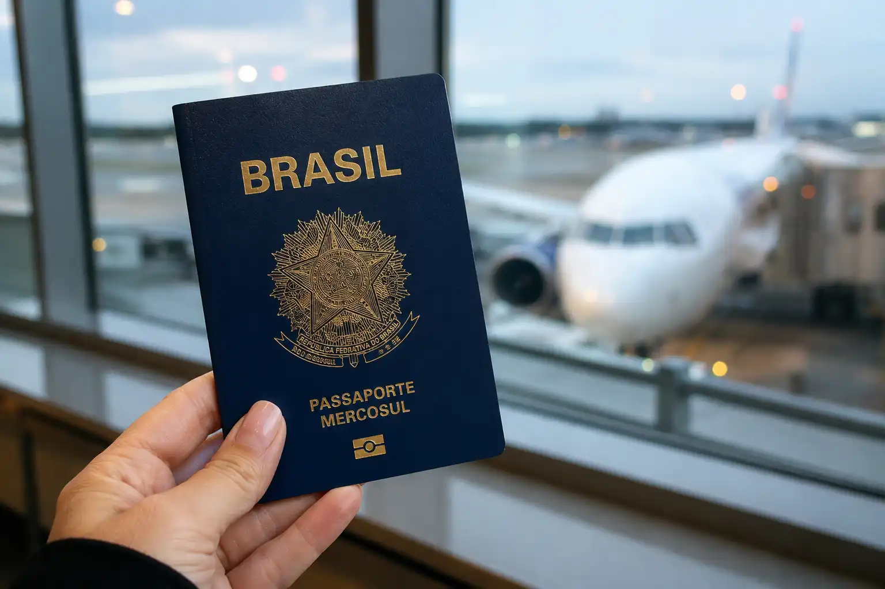

Documentos

Preparação essencial para a sua viagem
Para viajar pelo Chile, cidadãos de países do Mercosul necessitam apenas do documento de identidade original em bom estado (ou passaporte válido). Devido à diversidade geográfica do país, é fundamental organizar a bagagem considerando as grandes variações de temperatura entre o deserto e os glaciares.
A melhor época para visitar o Deserto do Atacama e Santiago vai de outubro a abril. Para quem procura praticar desportos de neve nos Andes, a temporada ideal de esqui vai de meados de junho a setembro.